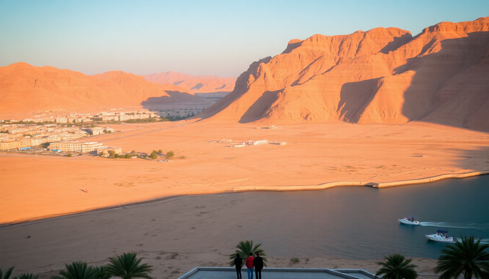

14-Day Egypt Itinerary: Cairo, Luxor, Aswan & Hurghada

I spent two weeks in Egypt bouncing between Cairo’s chaos, Luxor’s tombs, Aswan’s calm, and Hurghada’s Red Sea reefs. This itinerary is what I actually did—minus the mistakes. If you want to see the Pyramids, sail the Nile, and snorkel without getting scammed at every turn, here’s the route that worked for me.
Is 14 days enough for Egypt?
Yes, but you’ll move fast. Four cities in two weeks means you’re not lingering anywhere, but you can hit the big three—Pyramids, Valley of the Kings, and a Nile cruise—plus a few days of beach recovery. I’d skip Alexandria or Abu Simbel unless you add three more days. Stick to this loop: Cairo → Luxor → Aswan → Hurghada → back to Cairo.
What’s the best way to get between cities?
- Cairo to Luxor: Overnight sleeper train on the Wagon Lit line. It’s not luxurious—think 1970s dining car vibes—but it saves a hotel night and gets you there by 6 AM. Book through your hotel or the station directly to avoid third-party markups.
- Luxor to Aswan: Nile cruise boat. We took the MS Farah for three nights. It’s a floating hotel with a sun deck, and the kitchen is better than most Cairo street food. The boat stops at Edfu and Kom Ombo temples along the way.
- Aswan to Hurghada: Private car or bus. Go Bus runs a daily 6-hour ride for about $15. We hired a driver from our hotel in Aswan for $60—worth it to stop at the Temple of Kom Ombo again on the way.
- Hurghada to Cairo: Domestic flight with EgyptAir. It’s 90 minutes versus 6 hours by road. Book ahead; prices jump from $80 to $150 a week out.
Where should I stay in Cairo?
I split Cairo into two stays: three nights near the Pyramids, then two nights downtown. Here’s what worked:
- Pyramids area: Marriott Mena House is the classic choice—you can see the Pyramids from the pool. Overpriced for the room quality ($250/night), but the location is unbeatable. Cheaper option: Pyramids View Inn on the Pyramids Road strip. It’s basic, but the rooftop breakfast with Giza in the background is worth the thin towels.
- Downtown Cairo: Kempinski Nile Hotel on the Nile Corniche. The rooms are dated but the service is sharp, and you’re walking distance to Tahrir Square and the Egyptian Museum. For budget travelers, Hotel Longchamps in Zamalek is a solid mid-range—quiet neighborhood, good wifi, and a rooftop bar.
- Food: Abou El Sid in Zamalek for koshari and stuffed pigeon. Skip the tourist traps near the Pyramids; they charge triple for dry kebabs.
Which tours in Cairo are worth the money?
- Giza Pyramids and Sphinx: Go at 6 AM when the gates open. We booked a private guide through GetYourGuide for $40 per person—worth it to skip the line and avoid the camel touts who follow you shouting “one dollar” then demand $50. Don’t pay for entry to the Solar Boat Museum; it’s a dusty wooden boat in a hangar.
- Egyptian Museum: The main hall is overwhelming and poorly labeled. Hire a guide at the entrance (about $20 for 2 hours) to point out the Tutankhamun treasures. The Mummy Room is an extra $10 and feels like a funeral home—skip it if you’re squeamish.
- Khan el-Khalili Bazaar: Worth an evening stroll, but don’t buy anything on the first offer. Start at El Fishawy Café for mint tea, then walk the side alleys. The main strip is all mass-produced scarves and fake papyrus.
- Old Cairo: The Hanging Church and Ben Ezra Synagogue are free and quiet. Walk the Coptic Quarter in an hour—it’s a relief from the traffic noise.
How do I handle Luxor without getting ripped off?
Luxor is the worst for touts. Every taxi driver, felucca captain, and “guide” will quote triple. Here’s how I navigated it:
- Valley of the Kings: Buy your ticket at the gate (about $15) and pick three tombs to visit. KV62 (Tutankhamun) is the smallest—skip it unless you’re obsessed. KV6 (Ramesses IX) and KV11 (Ramesses III) have better color preservation. Bring water; it’s a 20-minute walk uphill from the entrance.
- Karnak Temple: Go late afternoon when the crowds thin. The Great Hypostyle Hall is the highlight—134 columns, and most tourists are gone by 4 PM. We hired a guide from the hotel for $25 for two hours; he pointed out the hieroglyphics we’d have missed.
- Luxor Temple: It’s lit up at night and free to walk around the exterior. The interior is small—45 minutes max.
- West Bank: Medinet Habu is quieter than the Valley of the Kings and has better reliefs. Colossi of Memnon is literally two giant statues by the roadside—stop for a photo, don’t pay the parking fee.
- Where to eat: Sofra Restaurant in the West Bank area for Egyptian home cooking. The lamb tagine and stuffed vine leaves are $8 each. Avoid the restaurants on the East Bank corniche; they’re all overpriced and touristy.
What’s the deal with the Nile cruise from Luxor to Aswan?
The cruise is the most relaxing part of the trip—but choose your boat carefully. We booked through GetYourGuide and got the MS Farah, which was fine. Here’s what to expect:
- Itinerary: Day 1: board in Luxor, sail to Edfu (visit Temple of Horus). Day 2: sail to Kom Ombo (temple and crocodile mummy museum). Day 3: arrive in Aswan, visit Philae Temple (take a motorboat from the dock, negotiate to $5 per person).
- Food: Three buffet meals a day. The MS Farah’s kitchen made decent falafel and grilled fish. Don’t expect gourmet—it’s cruise food.
- Cabin: We got a standard cabin with a window. The air conditioning worked, the bed was firm, and the shower had hot water. Upgrade to a suite only if you want a balcony.
- Tip: Bring seasickness pills. The Nile gets choppy near Esna Lock, and the boat rocks at night.
Is Hurghada worth the detour?
Yes, but only for the Red Sea. The town itself is a strip of all-inclusive resorts and dive shops. We spent three nights at Steigenberger Al Dau Beach Hotel—a 5-star for $120/night in shoulder season. The private beach has good snorkeling right off the jetty.
- Snorkeling trip: Book a half-day boat trip to Giftun Islands through the hotel. We paid $30 per person for a speedboat, lunch, and two snorkel stops. The coral is alive—saw clownfish, parrotfish, and a moray eel.
- Diving: Hurghada Diving Center in the El Dahar neighborhood runs PADI courses for $200. If you’re certified, the Abu Ramada reef is a 15-minute boat ride.
- What to skip: The Hurghada Marina is a fake Italianate shopping mall—overpriced restaurants and souvenir shops. El Dahar old town is gritty but has better local food. Try Felfela for grilled chicken and hummus.
- Getting back to Cairo: EgyptAir flights from Hurghada International Airport to Cairo run hourly. Book the 10 AM flight; you’ll be in Cairo by 11:30 AM with time for a final koshari.
FAQ
Is it safe to travel to Egypt as a solo female traveler? I traveled with a friend, but we met solo women on the cruise and in Hurghada. The main issue is harassment in markets and on the streets of Cairo—dress conservatively (shoulders and knees covered), avoid walking alone after dark, and use Uber instead of taxis. The tourist police presence at temples is heavy. I wouldn’t do it solo if you’re not comfortable with constant attention, but it’s doable.
Do I need a visa for Egypt? Yes, most nationalities need a tourist visa. You can get a 30-day single-entry visa on arrival at Cairo Airport for $25 (US dollars cash only). There’s a bank booth before passport control. Don’t use the third-party services that approach you in line; they charge $40 for the same thing.
How much cash should I bring? Egypt is cash-heavy. ATMs in Cairo and Luxor work but often have withdrawal limits of $100. I brought $400 in small US bills and exchanged at the airport (better rate than hotels). You’ll need cash for temple entry fees, taxi tips, and street food. Most hotels and cruise boats take cards, but always have a backup.
Conclusion
- Start in Cairo for the Pyramids and museums, but don’t linger more than 4 nights.
- Take the overnight train to Luxor to save time and a hotel night.
- Book a Nile cruise from Luxor to Aswan—the boat is the best way to see temples without driving.
- Add Hurghada for three days of snorkeling and beach time; it’s a real break from the dust and touts.
- Use Uber in Cairo and Luxor, negotiate everything else, and always carry small bills for tips.